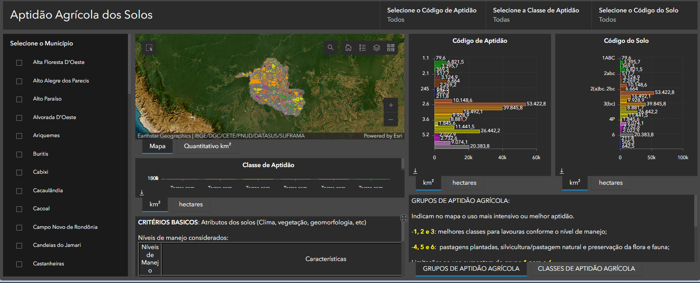
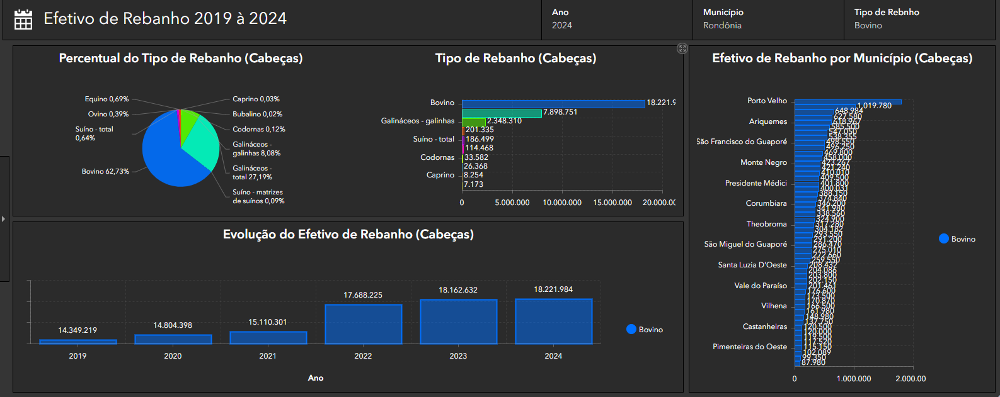
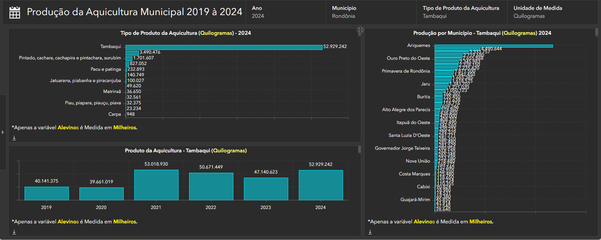

Monitoramento agropecuário por mapas interativos, análise territorial e inteligência geográfica para apoiar decisões estratégicas no desenvolvimento rural.
Municípios Monitorados
Áreas Analisadas
Mapas Agropecuários
Atualização de Dados
A integração entre agricultura e geotecnologia permite acompanhar áreas produtivas, analisar o uso do solo, identificar áreas cultivadas e monitorar mudanças no território.
Com mapas interativos, imagens de satélite e sistemas SIG, a SEDEC transforma dados agrícolas em informações estratégicas para apoiar produtores e gestores públicos.

A utilização de geotecnologias permite acompanhar áreas destinadas à criação de animais, analisar a distribuição das atividades pecuárias e compreender a dinâmica produtiva do território.
Por meio de mapas, imagens de satélite e dados geográficos, é possível gerar informações estratégicas para apoiar o planejamento, o desenvolvimento da produção pecuária e a gestão territorial.

A integração entre aquicultura e geotecnologia permite analisar áreas de produção, identificar recursos hídricos, acompanhar a distribuição da atividade aquícola e compreender sua dinâmica territorial.
Com mapas interativos, dados geográficos e sistemas SIG, a SEDEC transforma informações sobre a aquicultura em dados estratégicos para apoiar produtores, gestores públicos e o planejamento do setor.

Imagens de satélite e dados territoriais das áreas agropecuárias.
Processamento de informações geográficas e produtivas.
Geração de mapas, indicadores e relatórios agropecuários.
Planejamento estratégico para o desenvolvimento rural.
Monitoramento do uso do solo, recursos naturais e áreas produtivas.
Dados confiáveis para apoiar decisões no setor agropecuário.
Apoio ao crescimento econômico e produtivo das regiões.